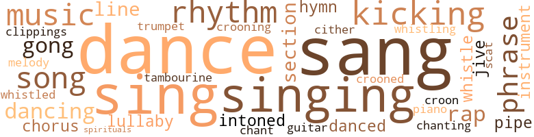
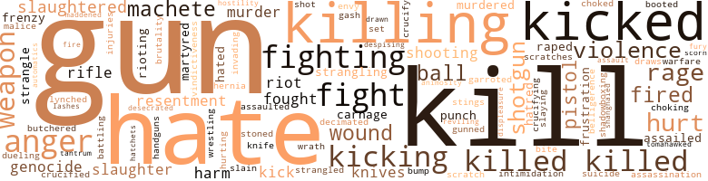
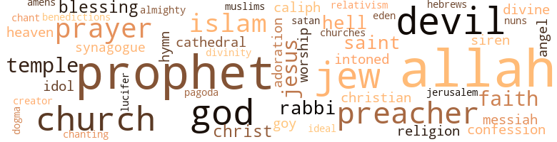

Eat of Me, I Am the Savior, by Kemp, Arnold (1972)
114 music-related terms matched in this text.
Most frequent terms in this topic: dance (8); sang (8); singing (7); sing (6); kicking (6)
chant.n.01
Definition: a repetitive song in which as many syllables as necessary are assigned to a single tone
| word | sentence |
|---|---|
| chant | All the time he was swinging his lantern and crooning his haunting chant . |
chorus.n.01
Definition: any utterance produced simultaneously by a group
| word | sentence |
|---|---|
| chorus | A flunkie chorus : " Amen ! " |
| chorus | Then a big , fat , beautiful sister with star-white eyes and a monstrous , gleaming black corn-silk wig finished off the last chorus : " Down in de cornfieeeeld Heeeeear dat mournful sound : All de darkies am a weeeeeping -- Massa 's in de cold , coooold ground . " |
clipping.n.01
Definition: an excerpt cut from a newspaper or magazine
| word | sentence |
|---|---|
| clippings | It was all : some notebook paper covered with a loose longhand , news clippings , three pairs of socks , five sets of underwear , and two books - the Koran and a first edition of a volume entitled American Negro Poetry , edited by James Weldon Johnson . |
cornet.n.01
Definition: a brass musical instrument with a brilliant tone; has a narrow tube and a flared bell and is played by means of valves
| word | sentence |
|---|---|
| trumpet | The true revolutionaries ; we were to be as Astrif , and our collective might and voices were to be his golden trumpet . |
croon.v.01
Definition: sing softly
| word | sentence |
|---|---|
| crooning | All the time he was swinging his lantern and crooning his haunting chant . |
| croon | Any minute I expected her to croon me a lullaby . |
| crooned | " Ooohh , did Mommyums hurt your little feelums ? " she crooned . |
dance.n.01
Definition: an artistic form of nonverbal communication
| word | sentence |
|---|---|
| dance | With a scampering dance Waldo tried to duck behind Abdul . |
| dance | Find the source , a liny voice murmured deep within me , find the source and you too will sing the happy song and dance the happy dance . |
| dance | " Remember that fund-raising dance at the African House ? " |
| dance | The peak of his linen cap folded over his forehead and did a little dance over his right eye . |
| dance | he wondered , his eyes darting from head to head , the mass becoming an odd spotty dance . |
| dance | Singing the last line over and over joyously , they began to hop an dance and wave their hands wildly : " Massa 's in de cold , cold ground ! |
dance.v.02
Definition: move in a pattern; usually to musical accompaniment; do or perform a dance
| word | sentence |
|---|---|
| dancing | Dancing , dancing a fiery step of impatience ; scaly-dry hind legs irritably rubbing , created the Reapers mad cackle . |
dance.v.03
Definition: skip, leap, or move up and down or sideways
| word | sentence |
|---|---|
| dance | Find the source , a liny voice murmured deep within me , find the source and you too will sing the happy song and dance the happy dance . |
| dancing | The room was hot , so hot ; I saw , in flashes of black and reddish white , figures of jinns dancing in the mist , prickling my eyes with barbs of salt and myrrh . |
| dancing | Hump-chested Johann Kirdoff , Der Kaufmann deutscher Abstammung , and younger brother Gehrig saw visions on this fashionable nineteenth-century Harlem corner , visions of Vienna 's St. Stephen 's and Castle der Schönbrunn ( forty miles from Neunkirchen , the mine-riddled , dung-sodden earth of home , family , and coal-blackened Reformation backlash ) ; half-memories of towering sculptured columns and ornate friezes dancing with tortured Dantesque figures sprinkling flowers and God-light to the nobles , confused yet with other half-memories of the elaborate Venetian artistry of the Santa Maria della Salute ( this viewed during a childhood visit to Venice with great-uncle Mitmer : " Acht gelen ! |
| danced | All the growing things literally danced and swayed their requited joy along the city 's streets . |
| dancing | I could hear cackling and the scaly rasp of limbs dancing ecstatically . |
| danced | The preacher , happy to see me up and yelling , danced over to me , his funny-time face profuse with sweat . |
| dance | Your feet are too big to dance impressively , and you sing like some broad gargling a douche bath . |
gong.n.01
Definition: a percussion instrument consisting of a metal plate that is struck with a softheaded drumstick
| word | sentence |
|---|---|
| gongs | Tiny gongs sounded from the ornate clock . |
| gongs | Tiny gongs and lyrical strings were barely perceptible in the background . |
| gong | He saw Habib peer carefully around the hall , then , with a chubby hand , signal Warren to sound the gong announcing the entrance . |
| gong | From the stage the gong sounded , and currents of electricity seemed to zap through the audience . |
guitar.n.01
Definition: a stringed instrument usually having six strings; played by strumming or plucking
| word | sentence |
|---|---|
| guitar | Soft strains of Spanish guitar music flowed from the doorway as I passed . |
hymn.n.01
Definition: a song of praise (to God or to a saint or to a nation)
| word | sentence |
|---|---|
| hymn | The man had a melodious lilting voice that carried over the heavy fog with the resonance of a cathedral hymn . |
| hymn | After a long , sweltering while , the minister signaled for the end of the hymn . |
kick.v.04
Definition: kick a leg up
| word | sentence |
|---|---|
| kicking | People were everywhere , hampering him , holding him ; he began to strike out , howling and kicking everyone he could reach . |
| kicking | I stripped down , kicking the prison grays aside for the last time . |
| kicking | He fell as an insect falls : upside down and kicking . |
| kicking | Fighting , kicking , and clawing , I made it to the door . |
| kicking | I cried , snapping light switches , kicking legs and bodies . |
| kicking | Pap shouted , wiggling and kicking on the floor turning more and more bloody . |
| Kicking | Kicking loose , I dived headlong for the pillow . |
lullaby.n.01
Definition: a quiet song intended to lull a child to sleep
| word | sentence |
|---|---|
| lullaby | Her voice was so soft , so filled with sadness that the words came out a lullaby . |
| lullaby | Any minute I expected her to croon me a lullaby . |
music.n.01
Definition: an artistic form of auditory communication incorporating instrumental or vocal tones in a structured and continuous manner
| word | sentence |
|---|---|
| music | Finally we were quiet , each drifting in a private pocket of nostalgia and warm music . |
| music | I could hear the laughter , and the music , and the joking , yes , and the anger , the lyric cursing skipping across the concrete . |
| music | Soft strains of Spanish guitar music flowed from the doorway as I passed . |
| Music | Music lit up the room . |
| music | Broadway was filled with spirituals , rhythm and blues , and the heated percussive strains of Spanish music . |
| music | The lyrics were incidental ; it was the music - the actual touch and pitch of the speaker 's rhythm - that was all important . |
musical_instrument.n.01
Definition: any of various devices or contrivances that can be used to produce musical tones or sounds
| word | sentence |
|---|---|
| instruments | Giraud had been last ; his fist , tight in the black gloves complemented by the smooth leather of a lead sap , fell with the precision of tooled instruments . |
| instrument | She spoke barely above a whisper , her voice soft and resonant , feathers playing a stringed instrument : " Please take me with you , Yaquii . |
phrase.n.02
Definition: a short musical passage
| word | sentence |
|---|---|
| phrase | The irony of the phrase amused me . |
| phrase | Although no prisoner has been actually boated up the Hudson in years , " boated out " is still the familiar phrase for prison transfers . |
| phrases | They babbled on and on interminably , attempting to defend themselves and their totally worthless , wasted lives ; trying to justify wanting to be white ; trying to bury guilt and self-hatred under an onslaught of words and slogans and lovely euphemistic phrases that their forebears must have learned at the knees of Thomas Jefferson 's house niggers . |
| phrases | When he spoke the phrases bored into you with the deliberate cadence of his deep voice . |
| phrase | The inane phrase " naked maja " slicked through his mind and was gone without conjuring anything except a deep inexplicable nostalgia . |
piano.n.01
Definition: a keyboard instrument that is played by depressing keys that cause hammers to strike tuned strings and produce sounds
| word | sentence |
|---|---|
| piano | They were getting closer ; I could hear a piano and tambourine accompanying them . |
pipe.n.04
Definition: a tubular wind instrument
| word | sentence |
|---|---|
| pipe | Each of them had a fuming corncob pipe in the corner of his mouth . |
| pipes | It was a very large basement with pipes jutting all over and a giant furnace blazing in the middle of the floor . |
rap.n.05
Definition: genre of African-American music of the 1980s and 1990s in which rhyming lyrics are chanted to a musical accompaniment; several forms of rap have emerged
| word | sentence |
|---|---|
| rap | I opened the meeting with a short , terse rap about blackness and unity , being very careful to avoid words like power and revolution - did n't want to put anyone on edge yet - then , like a good chairman should , I sat down and turned them loose on one another . |
| rap | No rap on the tap . " |
| rap | I needed to rap with him . |
| rap | I needed a sympathetic ear , someone familiar to sit and rap with , confide in . |
rhythm.n.04
Definition: the arrangement of spoken words alternating stressed and unstressed elements
| word | sentence |
|---|---|
| rhythm | He spoke with a distinct French rhythm , even swinging an occasional liaison . |
| rhythms | Warm dark flesh moved to untamed rhythms of ancestral drums . |
| rhythm | He had a good voice , strong and throaty with a hip , street rhythm . |
| rhythm | There was a mesmeric motion to the ship , a subtle sway that captured your breathing in its rhythm and carried you away ... far ... far ... away ... " I need your love ! |
| rhythm | Broadway was filled with spirituals , rhythm and blues , and the heated percussive strains of Spanish music . |
| rhythm | The lyrics were incidental ; it was the music - the actual touch and pitch of the speaker 's rhythm - that was all important . |
scat.n.01
Definition: singing jazz; the singer substitutes nonsense syllables for the words of the song and tries to sound like a musical instrument
| word | sentence |
|---|---|
| scat | Shaken by their stares as well as by the man in the coffin , I stumbled to my scat . |
section.n.01
Definition: a self-contained part of a larger composition (written or musical)
| word | sentence |
|---|---|
| section | Here , all movement from one section of the institution to another was directed , categorized , and chronicled . |
| section | The other quarter was its blind spot , and to emerge from this section was difficult , entailing a long series of questions and identifying crypto ; sometimes you stood there for hours waiting to be recognized . |
| section | No sooner you pass from one section to another , they come in with their hammers and nails . " |
sing.v.02
Definition: produce tones with the voice
| word | sentence |
|---|---|
| sang | Take me , his soul sang , sweep me with you , our destinies arc the same ! |
| sang | The words sang inside my skull , building and building until their enormity burst just behind my eyes , jerking me upright in bed . |
| sing | Find the source , a liny voice murmured deep within me , find the source and you too will sing the happy song and dance the happy dance . |
| Sing | Sing it ! |
| sing | Ahhh , sing it twice New York , New York ! |
| sing | Ca n't sing worth a damn , that broad ; anyway , the gimmick did n't work second time around , and that 's the last we heard of her . " |
| sang | " So , " Shirley sang in what was supposed to be a bright , cheerful voice , " sit down and tell me all about everything . " |
| Sing | Sing it ! |
| sang | The bird sang a shrill call in my ear . |
| sang | " Nothing happening , " he sang out to the room . |
| sing | Afterward everyone rose and began to sing . |
| sang | They sang an old American folk song that took me deep into my grandfather 's childhood and beyond : " Round de meadows am a ringing De darkeys ' mournful song , While de mocking bird am singing , Happy as de day am long . |
| sang | " Join us , brother , join us , " he sang out . |
| sing | Your feet are too big to dance impressively , and you sing like some broad gargling a douche bath . |
| sang | Yaquii sang the words over and over as he struggled to the front . |
| sing | " Excuse me , " Yaquii began to sing again . |
singing.n.01
Definition: the act of singing vocal music
| word | sentence |
|---|---|
| singing | Limp wrists ' flailing , he filled the air with his singing lisp . |
| singing | Anyway , he walks around every night singing these songs and swinging this here lamp . " |
| singing | The singing was distinct , but I did n't know where it was coining from . |
| singing | Inside was a crowd of black people : men , women , children , young and old , all singing and clapping and shouting . |
| singing | Before long I was with everyone else , clapping and singing and hollering . |
| singing | They sang an old American folk song that took me deep into my grandfather 's childhood and beyond : " Round de meadows am a ringing De darkeys ' mournful song , While de mocking bird am singing , Happy as de day am long . |
| Singing | Singing the last line over and over joyously , they began to hop an dance and wave their hands wildly : " Massa 's in de cold , cold ground ! |
| singing | She came - deep in the void I could hear Omar weeping and Pap shouting and ethereal choirs singing - as she gushed forth splashing my groin hot with the juice of resurrection .... ... Persistent knocking awoke me . |
song.n.01
Definition: a short musical composition with words
| word | sentence |
|---|---|
| song | Find the source , a liny voice murmured deep within me , find the source and you too will sing the happy song and dance the happy dance . |
| song | It came out of the night like a song . |
| songs | Anyway , he walks around every night singing these songs and swinging this here lamp . " |
| song | They sang an old American folk song that took me deep into my grandfather 's childhood and beyond : " Round de meadows am a ringing De darkeys ' mournful song , While de mocking bird am singing , Happy as de day am long . |
| song | They sang an old American folk song that took me deep into my grandfather 's childhood and beyond : " Round de meadows am a ringing De darkeys ' mournful song , While de mocking bird am singing , Happy as de day am long . |
| song | Crying could be heard all through the song . |
spiritual.n.01
Definition: a kind of religious song originated by Blacks in the southern United States
| word | sentence |
|---|---|
| spirituals | Broadway was filled with spirituals , rhythm and blues , and the heated percussive strains of Spanish music . |
swing.n.05
Definition: a style of jazz played by big bands popular in the 1930s; flowing rhythms but less complex than later styles of jazz
| word | sentence |
|---|---|
| jive | So do n't be bugging us with this local jive . " |
| jive | " A passport and all that jive ? " |
tambourine.n.01
Definition: a shallow drum with a single drumhead and with metallic disks in the sides
| word | sentence |
|---|---|
| tambourine | They were getting closer ; I could hear a piano and tambourine accompanying them . |
tone.v.01
Definition: utter monotonously and repetitively and rhythmically
| word | sentence |
|---|---|
| intoned | " I hear you , boss , I hear you , " he intoned , grinning . |
| intoned | " You know . . . we 're no good , Yaquii , " she intoned sadly , " none of us . |
| chanting | At that moment the chanting brother with the lantern emerged from the curtains and exited into the street . |
tune.n.01
Definition: a succession of notes forming a distinctive sequence
| word | sentence |
|---|---|
| line | Hitler was only one of the more recent in a long line of ruffians who , though aware of the values I speak of , totally confused them . |
| melody | A melody of growing things : brown and green harmonies engulfed me . |
| lines | He too had aged badly ; puffiness weighed the strong lines , dilations of fear scurried constantly across his eyes . |
| line | His lips stretched , showing a line of capped teeth . |
whistle.n.01
Definition: the sound made by something moving rapidly or by steam coming out of a small aperture
| word | sentence |
|---|---|
| whistling | I leaned against a car to steady my vision ; my head was ringing and clanging with pain and strange whistling . |
| whistles | Out front I was applauded for my amazing transformation with catcalls and whistles . |
whistle.v.01
Definition: make whistling sounds
| word | sentence |
|---|---|
| whistle | I looked at the hack ; he was ostensibly staring at the ceiling , his lips pursed in an airless whistle . |
| whistled | He whistled . |
zither.n.01
Definition: a musical stringed instrument with strings stretched over a flat sounding board; it is laid flat and played with a plectrum and with fingers
| word | sentence |
|---|---|
| cither | I do n't like it cither . |
340 violence-related terms matched in this text.
Most frequent terms in this topic: gun (20); kill (20); killed (19); hate (13); guns (12)
abrasion.n.01
Definition: an abraded area where the skin is torn or worn off
| word | sentence |
|---|---|
| scratch | The thin scratch of a wooden match . |
| scratches | All of us killed him , and the worst part of it is that we know we killed him , Yaquii , we know it , and yet there 's no shame and very little guilt , just little turd-dripping grins and quick scratches to cover it all up and forget it in the dirt . " |
anger.n.01
Definition: a strong emotion; a feeling that is oriented toward some real or supposed grievance
| word | sentence |
|---|---|
| anger | I knew it was not so much anger at me as resentment of his own ignorance that upset him , so I allowed it to rest for a while . |
| anger | It was an angry silence , and he knew me well enough to sense my anger . |
| anger | The anger of Luther , piled upon the thievery of 1776 , combined to give Harlem its first white elephant . |
| anger | They looked tired , dead tired ; in one fashion or another they had all been dealing in white shit all day , and their anger and resentment bubbled up into their proud heads . |
| anger | I could hear the laughter , and the music , and the joking , yes , and the anger , the lyric cursing skipping across the concrete . |
| anger | She whirled , fiery with anger . |
| anger | I was caught between anger and amusement as he prattled on in his arrogant manner . |
| anger | He was suddenly annoyed , barely touching the edge of anger . |
| anger | The preacher 's eyes bulged with anger . |
| anger | Lavenja noticed it but had no way of knowing the anger was directed at himself and not at her . |
| anger | Ali 's big body snapped around ; his surprised eyes began widening with anger . |
animosity.n.01
Definition: a feeling of ill will arousing active hostility
| word | sentence |
|---|---|
| animosity | Occasionally they would feel an eye or two cut their way , sense the animosity , the mockery , but it was a small thing , this . |
assail.v.01
Definition: attack someone physically or emotionally
| word | sentence |
|---|---|
| assaulted | " In this hour of dire need , my unfortunate friend here just brutally assaulted , and you deign to - " " That 's what I thought , " Bunnie said knowingly , then turned to me . |
attack.v.01
Definition: launch an attack or assault on; begin hostilities or start warfare with
| word | sentence |
|---|---|
| assailed | Fatu represented WAAR ( Women for Afro-American Revolution ) , and she assailed us for our timidity and hesitance in declaring war on America and activating our young warriors . |
attack.v.02
Definition: attack in speech or writing
| word | sentence |
|---|---|
| assailed | I closed my eyes hoping for sleep and all the sounds assailed me : nameless , sourceless , without form or long duration , they began a murmur , then grew to a frightening pitch . |
automatic_rifle.n.01
Definition: light machine gun
| word | sentence |
|---|---|
| automatics | Rifles , pistols , automatics , machetes , knives , hatchets ; all kinds of small arms littered the room . |
battle.v.01
Definition: battle or contend against in or as if in a battle
| word | sentence |
|---|---|
| Battling | Battling on your front , while I , with your help and support , will be attacking from my front . |
belligerence.n.01
Definition: hostile or warlike attitude or nature
| word | sentence |
|---|---|
| belligerence | The belligerence dropped from her face and she began to laugh loudly as one does at a clown . |
boot.v.01
Definition: kick; give a boot to
| word | sentence |
|---|---|
| booted | White and trembling before the monstrous self-images transmitting between us , he swiftly raised his booted foot and brought it down on my head in the mercy of his knowledge . |
bullying.n.01
Definition: the act of intimidating a weaker person to make them do something
| word | sentence |
|---|---|
| intimidation | No amount of digging , bribing , or intimidation could pierce the rind . |
bump.n.01
Definition: a lump on the body caused by a blow
| word | sentence |
|---|---|
| bump | It was over in a flash ; a muffled bump , a quick blink , and they were behind us , the old man tumbling end over end like some sort of skeletal desert weed . |
butcher.v.01
Definition: kill (animals) usually for food consumption
| word | sentence |
|---|---|
| Slaughter | Slaughter them for they are but Isaac embodied ; your Isaac ; your Isaac-soul . |
| slaughtered | I remembered the last time I had seen her : crouched on all fours over Nicholas , howling like a stricken animal over its slaughtered mate . |
| butchered | He offered them his love , his whole life , a chance to be men and women - do you hear , men and women - and for this , for his love and his dream - his dream for them , mind you - they killed him , butchered him with shotguns like a wild hog . " |
| slaughtered | All we do is think of doing something and we 're behind bars , shot down , slaughtered in our beds as we sleep . " |
| slaughtered | Repeatedly I have watched the blood of my sons spilled upon the soil of this ungrateful land , and now , now my last seed , my youngest , Gamal Hussain , lies slaughtered in the dust of a devil 's hut . |
| slaughtered | Once it had been the ivory stairway to heaven , the charmed stones of Thebes ; now it was just another tottering stack of decaying wood leading to a peeling second-floor room that itself wafted in dust and decay and hopelessly slaughtered illusions . |
character_assassination.n.01
Definition: an attack intended to ruin someone's reputation
| word | sentence |
|---|---|
| assassination | Finally I spoke of Nicholas ' assassination , of my own part in it , of my seven-year sentence for killing two of the assassins , and he was silent ... very , very silent , waiting for the bait to be snapped . |
contemn.v.01
Definition: look down on with disdain
| word | sentence |
|---|---|
| despising | " Of course , " I said , despising that smug bastard . |
| scorn | In that same time I have witnessed the desolation of their spirit and with them I have suffered the scorn and abomination of the devils . |
craze.n.02
Definition: state of violent mental agitation
| word | sentence |
|---|---|
| frenzy | Hot town hot town screaming dreaming plot town ; home , great god dying of frenzy in the yellow door of incest ; Eden , low angel wrapped in the feathered sanctuary of divine angel wings ; limbo , dear Auden and we can not love one another so must die upon the stoked coals of this town , this allegory of humanity and human-kind , this personification of world and self . |
| frenzy | The cop had put three bullets in the back of his head before he took ten steps , and in the frenzy of your maddened heart you had charged the cop , gun and all , and somehow with two bullets in you , wrenched it from him and beat him to death with it - natural life , the court gave you . |
crucify.v.01
Definition: kill by nailing onto a cross
| word | sentence |
|---|---|
| crucifying | Whitey was crucifying us in his newspapers , painting us as bloodthirsty savages running around naked with machetes and bones in our noses . |
| crucified | She had believed once , and saw her hope crucified on a dusty , wooden stage . |
| crucify | Poor Pepe , even if he beats the D.A. 's case the Caballeros are going to crucify him for getting them involved in this . |
cut.n.05
Definition: a wound made by cutting
| word | sentence |
|---|---|
| gash | That is , she said she was Japanese , but it turned out she was also part Okinawan and part red-neck and her gash was straight like everybody else 's . " |
desecrate.v.01
Definition: violate the sacred character of a place or language
| word | sentence |
|---|---|
| desecrated | You do n't know what it 's like , all those white girls lying under me waiting to be desecrated , begging to be perverted , crying to me to be the freak . " |
displeasure.n.01
Definition: the feeling of being displeased or annoyed or dissatisfied with someone or something
| word | sentence |
|---|---|
| displeasure | With displeasure he prepared to get out of the car . |
draw.v.23
Definition: pull (a person) apart with four horses tied to his extremities, so as to execute him
| word | sentence |
|---|---|
| draws | Thus the goy gives history a reality it does n't possess , he draws up guidelines , morals , and nonsensical legalities all based on the past , then to explain the whole senseless glob , he lumps it under the further senseless title of tradition . " |
| drawn | Ali was propped against the wall in a sitting position , knees drawn up tightly and his balled fist protecting his head . |
duel.v.01
Definition: fight a duel, as over one's honor or a woman
| word | sentence |
|---|---|
| dueling | " Power to the people , " I replied , our eyes dueling unrelentingly ) , we all settled down for business . |
eliminate.v.03
Definition: kill in large numbers
| word | sentence |
|---|---|
| decimated | Our numbers are decimated , our blood diluted , and our poor minds so scattered and fucked up that some of us do n't know we 're black even when our own black faces are staring back at us from a mirror ! " |
envy.n.01
Definition: a feeling of grudging admiration and desire to have something that is possessed by another
| word | sentence |
|---|---|
| envy | All the rest - dying , suffering , laughing , loving , hatred and perfidy , envy and struggle - all are subsequent and inevitable to creation , and tints expected ... perhaps ... even desired ! |
ferociousness.n.01
Definition: the trait of extreme cruelty
| word | sentence |
|---|---|
| brutality | Black suits descended , black hands pulled him down , drowning his screams in brutality . |
fight.n.02
Definition: the act of fighting; any contest or struggle
| word | sentence |
|---|---|
| Fighting | Fighting the urge was useless ; I had to talk to someone . |
| Fighting | Fighting , kicking , and clawing , I made it to the door . |
fight.n.05
Definition: a boxing or wrestling match
| word | sentence |
|---|---|
| fight | He concluded with : " In the never-ending fight for freedom , both in America and abroad , the most ardent and steadfast friend the Afro-American has bad has been bis Jewish brother . " |
| fight | Less than twenty feet from the stage a fight broke out : at least three men were fighting and cursing each other , rolling on the floor like entangled bears . |
fight.v.02
Definition: fight against or resist strongly
| word | sentence |
|---|---|
| fighting | All around , people were fighting and screaming and cursing . |
| fight | I turned , ready to go berserk , to fight and tear and rip until only pieces of me could be carried back inside . |
| fighting | Pap swerved the ear , wheeling and cursing , fighting for control . |
| fought | Again Pap swerved and cursed , fought for control - this time we were n't so lucky . |
| fight | I let the two of them fight for a while , feeling the way Nicholas must have felt watching Habib and me go after one another in the old days . |
| fought | Somehow I fought it off and lurched to my feet . |
| fight | My name is ... My name ... Oh hell , man , my name is ... Now ai n't that just like a nigger , wan na cuss and fight and raise all kinds of hell and he do n't even know who he is . |
| fighting | He had been warned before about fighting with Habib and he had thought this time he was going to catch holy hell . |
| fight | And like a discovered demon , you fight desperately for the surface . |
| fighting | There was a jarring impact and he went flying backward fighting the air for something to hold onto . |
| fighting | " At least in the old neighborhood you could hear your neighbors fighting and knew what it was all about . |
| fight | Merciful Allah , he thought , a little frightened , this is it , I have but to reach ; and he reached , fingers trembling , as dreaming knights must 've reached for the Holy Grail , and then ... " Oh , Nicholas , it 's beautiful , we had to fight through the crowds . |
| fight | Desperately , he had to grip his fist in order to fight down a tantrum . |
| fought | I closed my eyes and fought down a tickle of panic building within . |
| fighting | Yaquii did n't like driving , especially big cars like the Lincoln he was now fighting through traffic . |
| fighting | Some of his people moved to help him , but he waved them off feebly. ; " We have wasted much energy and time fighting each other , " he said sorrowfully . |
| fight | You must stay and fight . |
| fight | For men to fight devils merely on a human plane is ridiculous . |
| fight | Too late , he thought , and began to fight his way to the front frantically . |
| fighting | Ali saw him and began fighting his way through to meet him . |
| fighting | Less than twenty feet from the stage a fight broke out : at least three men were fighting and cursing each other , rolling on the floor like entangled bears . |
fit.n.01
Definition: a display of bad temper
| word | sentence |
|---|---|
| tantrum | Desperately , he had to grip his fist in order to fight down a tantrum . |
frustration.n.03
Definition: a feeling of annoyance at being hindered or criticized
| word | sentence |
|---|---|
| frustration | And like most revolutionaries , this meant the days of discovery , the first mutual kiss of the Cause , before disillusionment , before frustration and cynicism , when the mirage of integration still soaked our hearts . |
| frustration | " I say yesterday because he is the epitome of what I used to be : amoral , aimless , filled with bitter frustration and a ' damn the world ' attitude . |
fury.n.01
Definition: a feeling of intense anger
| word | sentence |
|---|---|
| rage | His mind and body were empty , his rage temporarily spent . |
| rage | The rage returned like a dying planet burning up its orbit . |
| rage | This room was too close , this crowd too small to vent his enormous rage . |
| rage | Drunk with rage , I gripped the railing as my head floated in a light , red air . |
| rage | I could smell the gunpowder , see the flashes , hear the crowd , feel the surging blood bursting my temples , blinding me with insanity and rage . |
| rage | There is no love in them , Nicholas ; only a deep , burning vindictiveness , a rage at being created the unfortunate mates of unmanly men . |
| rage | I tried to be cool reading it , but rage filled , my throat . |
| fury | " Hello , Habib , " I said in restrained fury . |
gag.v.06
Definition: cause to retch or choke
| word | sentence |
|---|---|
| choking | This is reality , I whispered aloud , this choking , gasping death grip on the universe , this maddening mania to breathe even though only dirt enters your lungs . |
| choked | I laughed around words , soaking them in choked moist barks . |
garrote.v.01
Definition: strangle with an iron collar
| word | sentence |
|---|---|
| garroted | I saw the mothers themselves garroted by the thin silky strands of their babies ' blond heads . |
genocide.n.01
Definition: systematic killing of a racial or cultural group
| word | sentence |
|---|---|
| genocide | I saw genocide the likes of which would leave the earth a barren pyre at the altar of Cain ! |
| genocide | They claim that genocide is genocide , and if one is going to assimilate , then , why not with the winner instead of the loser ? |
| genocide | They claim that genocide is genocide , and if one is going to assimilate , then , why not with the winner instead of the loser ? |
gun.n.01
Definition: a weapon that discharges a missile at high velocity (especially from a metal tube or barrel)
| word | sentence |
|---|---|
| gun | Yaquii broke with Shirley 's scream , slammed through people with both hands , his gun barrel slashing at random . |
| guns | The three killers had thrown their guns away and were turning toward the door when Waldo saw Yaquii swooping down on them . |
| gun | A hand touched him and he swung out with the gun barrel , slicing a young boy of about sixteen across the eyes . |
| gun | Yaquii gripped his gun with both hands and headed for the final kill . |
| gun | Yaquii raised his gun and fired point-blank into the man 's face . |
| gun | The gun clicked . |
| gun | Again and again Yaquii fired rapid clicks , then savagely rammed the gun barrel into the man 's mouth . |
| gun | He left the gun there , jutting like a metal tongue from the man 's mouth . |
| gun | There was nothing to do , no way on earth for them to prevent someone from emptying a gun or plunging a blade into the tall prominent figure of Nicholas Said . |
| gun | The hack guarding me was looking off in the distance ; the two sitting on the desk were staring at my belongings as if at any moment they expected to sec a machine gun or a tank come bursting out of a pair of drawers . |
| gun | There would have been an extra pair of eyes , an extra gun , another body to shield Nicholas . |
| guns | Big money connections , arms collections : big guns , ammo , demolitions , much heavy shit . " |
| gun | I held the gun close to my chest and listened totthe incessant cursing of Pap . |
| gun | The cop had put three bullets in the back of his head before he took ten steps , and in the frenzy of your maddened heart you had charged the cop , gun and all , and somehow with two bullets in you , wrenched it from him and beat him to death with it - natural life , the court gave you . |
| guns | I need money , guns , recruits , sanctuaries . |
| guns | I thought of police , and armies , and tanks , of courts , and judges , and prosecutors , of politicians and prisons and banks and churches and schools and all the innumerable barricaded institutions poised to level their guns ; then I thought of the helpless old couple mashed bloody into the bright street . |
| gun | " I need a car , a gun , and the information on this paper . " |
| guns | You gone need two guns . |
| gun | I rose and stuck the gun in my belt . |
| gun | His gun skittered to the other side of the room . |
| gun | Before he knew what had happened I was inside with the door closed , his gun in my left hand and my own in my right . |
| guns | " Why the piece , man ? " he asked , nodding calmly toward the guns . |
| Guns | Guns and more guns , all kinda guns . |
| guns | Guns and more guns , all kinda guns . |
| guns | Guns and more guns , all kinda guns . |
| Guns | Guns that fire themselves . |
| Guns | Guns that see at night . |
| guns | Default and we garnishee the guns . |
| guns | Slogans do not win wars , sir , guns do . |
| guns | And they have the guns . |
| gun | The gun was heavy in my hand . |
| gun | Maybe he saw the gun , maybe he did n't - the result was the same . |
| gun | I could hear Lavenja pleading , " Do n't let him get to his gun ! " |
| gun | The bunk was a few feet away and under the pillow my gun . |
| guns | But guns alone can not destroy the unhuman creations of Yakub . |
gun.v.01
Definition: shoot with a gun
| word | sentence |
|---|---|
| gunned | After a few rocking motions Pap backed the car onto the road and gunned forward in a rush of smoke and screech . |
harm.v.01
Definition: cause or do harm to
| word | sentence |
|---|---|
| harm | Drain the emotions , the weaknesses , the fears ; cleanse yourself of all that 's natural and human , there 'll never be another night like this for you ; grovel , Yaquii , grovel and writhe in the orgy of your flesh , for tomorrow you will rise and never again will flesh be able to harm you . |
hate.n.01
Definition: the emotion of intense dislike; a feeling of dislike so strong that it demands action
| word | sentence |
|---|---|
| hate | The ugly truth behind those hate vomiters . |
| hate | I breathed deeply , feeling the bitter juices of hate ooze through me , healing as no other balm heals . |
| hatred | All the rest - dying , suffering , laughing , loving , hatred and perfidy , envy and struggle - all are subsequent and inevitable to creation , and tints expected ... perhaps ... even desired ! |
| hate | Only hate remained , and hate is of the genus Mortalis . |
| hate | Only hate remained , and hate is of the genus Mortalis . |
| hate | They do n't look in the mirror at their dark skins ; they do n't look at the filth and garbage the honkies make them live in ; they do n't see the hate and contempt in white eyes or hear the word ' spick ' from the same mouths that yell ' nigger . ' |
| hatred | We must end it : the hatred , the suspicion , the unnatural blood conflicts between brothers . |
hate.v.01
Definition: dislike intensely; feel antipathy or aversion towards
| word | sentence |
|---|---|
| hate | Everybody they want to hate to death : Negroes , Catholics , Jews , Latins , everybody . |
| hated | Habib hated you for it . |
| hate | Not that I condone the method - I do n't condone violence under any circumstances - and of course I feel deep sympathy for his family ; but it should n't come as a surprise to them or to anyone , his end is the inevitable end of all hate vomiters . " |
| hated | I knew that no matter how far apart we all seemed , that no matter how rich , how poor , how bourgeois , how militant , how phony , how bitter , how frightened , how successful any of us were , we had one final uniting force , one overriding factor in common : We all hated white America . |
| hate | I hate yella niggas ! " he hissed vehemently . |
| hate | " I hate 'em , " he said testily . |
| hate | I hate their flour-dry old asses . |
| hate | God , how I hate 'em ! " |
| hate | Become part of them and yet all the time hate them . |
| Hate | Hate them to death . |
| Hate | Hate them so bad that every smile you lay on them burns like the fires of hell . |
| hate | The Man says " love , " and we love him ; " hate , " and we hate ourselves , kill ourselves , mutilate ourselves . |
hernia.n.01
Definition: rupture in smooth muscle tissue through which a bodily structure protrudes
| word | sentence |
|---|---|
| hernia | Damn near got a hernia trying to keep up with them . " |
hostility.n.01
Definition: a hostile (very unfriendly) disposition
| word | sentence |
|---|---|
| hostility | The hostility had disappeared from his eyes but not from his voice . |
hurt.v.04
Definition: cause damage or affect negatively
| word | sentence |
|---|---|
| hurt | Look , man , I do n't wan na hurt your feelings or nothing , but I do n't know what the fuck you 're talking about . |
| hurting | By the time I got to it my head was hurting so badly that I could hardly see , but I carried on heroically in the tradition of Shine , John Henry , and all the other gallant niggers of American folklore . |
| hurt | " Ooohh , did Mommyums hurt your little feelums ? " she crooned . |
injury.n.01
Definition: any physical damage to the body caused by violence or accident or fracture etc.
| word | sentence |
|---|---|
| harm | " Look , man , " I said quickly , " I 'm going home in an hour or two , so what possible harm can there be in a simple question like that ? " |
| hurt | The hurt was so real that I had to squeeze my left side hard . |
| injuries | They knew , however , that even this non-interference would be construed negatively : they would be cited for police apathy amidst Harlem turmoil and subsequently blamed for any and all damages and injuries . |
| hurt | Then " - again the wrinkled hurt crept across his face - " two years ago she ran away to find her mother . " |
| harm | Several attempts had been made on his life , including the burning of his house , the bombing of his car , and a very strange traffic accident to his wife Shirley that had barely missed doing her serious harm ; yet here it was the fifth of January and Nicholas Said was still alive and unharmed . |
invade.v.01
Definition: march aggressively into another's territory by military force for the purposes of conquest and occupation
| word | sentence |
|---|---|
| invading | One of these days an invading army is going to storm those walls , and behind them , under the same shroud of secret stink , they 're going to find stacks of black corpses from Ossining to Dannemora . |
kick.v.04
Definition: kick a leg up
| word | sentence |
|---|---|
| kicking | People were everywhere , hampering him , holding him ; he began to strike out , howling and kicking everyone he could reach . |
| kicking | I stripped down , kicking the prison grays aside for the last time . |
| kicking | He fell as an insect falls : upside down and kicking . |
| kicking | Fighting , kicking , and clawing , I made it to the door . |
| kicking | I cried , snapping light switches , kicking legs and bodies . |
| kicking | Pap shouted , wiggling and kicking on the floor turning more and more bloody . |
| Kicking | Kicking loose , I dived headlong for the pillow . |
kick_back.v.02
Definition: spring back, as from a forceful thrust
| word | sentence |
|---|---|
| kicking | Some even climbed on top the switchboard kicking wires , trampling switches . |
| kicked | Abdul gasped , his entire body seemed to cave in upon his kicked groin , he grinned up as Yaquii shot him three times in the mouth . |
| kicks | The man was screaming under the kicks , his left leg , bent and twisted , was dragging behind him as he crawled for the door . |
| kicked | Yaquii was struck , scratched , kicked from all sides , then finally , burned out and exhausted , he crumpled , was kicked , and rolled limply under a small island of chairs near the stage . |
| kicked | Yaquii was struck , scratched , kicked from all sides , then finally , burned out and exhausted , he crumpled , was kicked , and rolled limply under a small island of chairs near the stage . |
| kicked | The other three had wrecked me earlier , pounded away the resistance : my bladder had been kicked dry , the ruin of my kidneys flushed red with blood ; mushy bowels gave , befouling the close room with a dense funk . |
| kicked | Sensing freedom , she wiggled and kicked harder . |
| kicked | Desperately I kicked the table into her legs , sending her sprawling at the door . |
| kicks | Habib found that he could live with Ali and the Garvey Pumas quite comfortably on nearly every issue except alignment with student groups and other liberal whites , who , according to Habib , were just " a bunch of bored , masochistic Hebrews looking for kicks . " |
| kicked | A lawyer by the name of Tyler T. Duneun kicked it off . |
| kicking | Now I know I 'm kicking your fucking ass . |
| kick | Now I know goddamned well I 'm not Sister Nikki or any other poet , which means you is bullshitting me , which means that I most assuredly am going to kick your jive ass tonight . |
| kicking | Whoever you are , I 'm kicking your cakes all over the street . |
| kicked | He banged into the wall , and I kicked him twice rapidly in the pit of his gut . |
| kicked | He kicked and clawed frantically . |
| kicked | More weapons were on the floor and I kicked them aside , plunging deeper into the room . |
| kicked | I cursed and kicked and flayed out wildly , hitting a body everywhere I struck . |
kill.v.10
Definition: cause the death of, without intention
| word | sentence |
|---|---|
| killed | " You killed him , you bastards killed him ! '' he was raving , but there was no articulation , just the howling , that incessant lupine howl that was beyond his control . |
| killed | " You killed him , you bastards killed him ! '' he was raving , but there was no articulation , just the howling , that incessant lupine howl that was beyond his control . |
| killing | They 're killing my husband ! |
| killing | They 're killing hiilMMMMMMMM ! " |
| kill | Had to kill everybody , the whole world . |
| killing | They 're killing my husband ! |
| killing | They 're killing him ! |
| kill | I 'm going to kill this bastard , I promised myself . |
| kill | I 've got to kill him someday . |
| kill | He 's going to kill me , I suddenly realized . |
| kill | This big stupid ass is going to kill me for nothing . |
| kill | A strange thing , after the beating I had come to in the hospital with no desire to kill Giraud . |
| killing | Finally I spoke of Nicholas ' assassination , of my own part in it , of my seven-year sentence for killing two of the assassins , and he was silent ... very , very silent , waiting for the bait to be snapped . |
| killed | Except perhaps gotten yourself killed in the bargain . " |
| kill | It was eerie : this fat old woman trying to recognize a man who had once tried to kill her , a man who had eaten at her table for three years , then one day from a distance of less than fifty feet had thrown a bomb between her feet as she screamed and screamed his name in damnation . |
| killed | " Listen , " Omar continued , " after Nicholas was murdered we panicked , fell apart like children in a burning school , but what 's more important - and shameful - is that we panicked when he was killed . |
| killing | Finish killing the square motherfucker . |
| killed | Well , the people - his people - killed him , Yaquii . |
| killed | He offered them his love , his whole life , a chance to be men and women - do you hear , men and women - and for this , for his love and his dream - his dream for them , mind you - they killed him , butchered him with shotguns like a wild hog . " |
| kill | " No , Shirley , no , his people did n't kill him . |
| killed | But let 's get one thing straight : what killed Nicholas , I mean , what really killed Nicholas , was withdrawal and apathy , the apathy of millions of black people who quit just like you 're quitting now - all those sleeping I-don ' t-care 's stumbling round and round in the ghetto . " |
| killed | But let 's get one thing straight : what killed Nicholas , I mean , what really killed Nicholas , was withdrawal and apathy , the apathy of millions of black people who quit just like you 're quitting now - all those sleeping I-don ' t-care 's stumbling round and round in the ghetto . " |
| killed | " What killed my husband , " she continued as she backed away , " was you ! " |
| killed | " Yes , you killed my husband , you and all the rest of the snivelers . |
| killed | " You killed him , " she sobbed . |
| killed | " Yes , and may Allah forgive me , I killed him too . |
| killed | All of us killed him , and the worst part of it is that we know we killed him , Yaquii , we know it , and yet there 's no shame and very little guilt , just little turd-dripping grins and quick scratches to cover it all up and forget it in the dirt . " |
| killed | All of us killed him , and the worst part of it is that we know we killed him , Yaquii , we know it , and yet there 's no shame and very little guilt , just little turd-dripping grins and quick scratches to cover it all up and forget it in the dirt . " |
| killed | They talked about Father Divine and his " peace " restaurants and white angels , about Small 's , and the Golden Gate , and the Savoy , and Bumpy Johnson , and about a black cop named Wallace , who , according to Pap , " killed more niggers than Bilbo . " |
| kill | I had to sit down or the pain was going to kill me on the spot . |
| kill | I knew that fucking her was going to kill me , but I wanted some of that slanted snatch in the worst way - had to have it . |
| killing | " Down home I was on the chain gang twice for killing yella niggas , " he whispered confidentially , " and if the good Lord 's willing , I 'm going to git me at least one more before I dies . " |
| killing | There in all my roguish glory , full-face and profile , straight from the prison files : SOUGHT FOR QUESTIONING And booming above my glistening , lumpy head in bold , towering letters : BOMB FACTORY EXPLODED BLACK MILITANT ARMS CACHE UNCOVERED IN BROOKLYN New York - A Brooklyn church allegedly used as a bomb factory and arms cache for a revolutionary black militant organization exploded tonight , killing 4 and seriously wounding 6 . |
| killed | Three men was shot and killed down South early this morning , and they say you done it . |
| killed | Somebody killed that man the Reverend , and that man Dr. Lovall , and another man with one of them funny Muslim names . " |
| killed | A sniper had killed all three men as they breakfasted on their motel terrace early this morning . |
| kill | They say you went crazy in jail and that now that you 're out you trying to kill everybody you think is responsible for the death of your friend Nicholas . |
| killed | They say you blew up the church last night and then you flew down South and killed them three men this morning . " |
| kill | Just kill all the niggers on earth and set up supernigger himself , great god-messiah Yaquii Laster , as the fall guy . " |
| kill | " One day , " I informed him sadly , " it 's going to be necessary for us to kill you . " |
| kill | I guess he suspected that I was going to kill him anyway . |
| kill | " You gone kill me ? |
| kill | Bullets and rockets that follow you no matter where you hide and kill you . |
| kill | Beasts kill you in your bed , in church , in school , anywhere they find you . |
| killing | Niggers killing niggers . |
| killing | Niggers killing niggers . |
| kill | The Man says " love , " and we love him ; " hate , " and we hate ourselves , kill ourselves , mutilate ourselves . |
| killing | I had n't told him about the boat or about killing Habib . |
| kill | Believe me , it is not we who have tried to kill you . |
killing.n.02
Definition: the act of terminating a life
| word | sentence |
|---|---|
| kill | Yaquii gripped his gun with both hands and headed for the final kill . |
| killing | I 'm talking about living , yes , and killing . |
knife.n.02
Definition: a weapon with a handle and blade with a sharp point
| word | sentence |
|---|---|
| knife | With a swift , terrible motion he opened both books , broke their spines , and then slit their bindings with a long rusty knife . |
| knives | Some , according to witnesses , were heavily armed and dangerous , waving knives and pistols threateningly as they made their getaway . |
| knives | From beneath their gowns they began to pull all sorts of weapons : guns , ball bats , butcher knives , straight razors , pots of lye . |
| knives | Rifles , pistols , automatics , machetes , knives , hatchets ; all kinds of small arms littered the room . |
lynch.v.01
Definition: kill without legal sanction
| word | sentence |
|---|---|
| lynched | Anyway , the honkies lynched him along with a young brother and left them in a swamp . " |
machete.n.01
Definition: a large heavy knife used in Central and South America as a weapon or for cutting vegetation
| word | sentence |
|---|---|
| machetes | Whitey was crucifying us in his newspapers , painting us as bloodthirsty savages running around naked with machetes and bones in our noses . |
| machetes | They were the sounds I could imagine hearing in distant , poetic places like Tanzania , Accra , Kumasi , Mali ; and I knew that in those far musical-places the same faces laughed as the same bodies wrapped in yards of the same colors floated up steep mountain paths and across narrow streams of pebbled water with swaying calabashes upon their heads and wet , gleaming machetes in their strong hands . |
| machetes | Prowl , prance , talk of the big stings they made or could 've made or will make ; of the bitches they have fucked and will fuck again ; of the honkies they 're going to smash ; of how they could take Mississippi in six weeks with just machetes and handguns . |
| machetes | Rifles , pistols , automatics , machetes , knives , hatchets ; all kinds of small arms littered the room . |
| machete | As Pap spoke he reached for me from the floor where he knelt ; blankly I reached for the nearest weapon , a wiggling machete that leaped from table to hand ( it too was now invested with the new life ) , and sliced deep into Pap 's torso , a grand swishing slice that spurted hot crimson bubbles over everything . |
madden.v.03
Definition: make mad
| word | sentence |
|---|---|
| maddened | Pap , maddened with pain and salvation , torn with incredulity , Pap shouting as he squeezed his disappearing wound : " It 's happened , it 's happened ! |
malice.n.01
Definition: feeling a need to see others suffer
| word | sentence |
|---|---|
| malice | I told him that I was n't with any group whatsoever and he was shocked ; he looked at me with such malice that I quickly apologized by saying that I had been out of the country for a while and that I intended to join a group as soon as possible . |
martyr.v.01
Definition: kill as a martyr
| word | sentence |
|---|---|
| martyred | I mean , martyred hope is one thing , but when it incorporates martyred strength , martyred courage , martyred eyes - Oh God , Yaquii , we were directionless . |
| martyred | She 'd lost a lot of weight ; all that plump sexiness was gone , martyred to a memory . |
murder.n.01
Definition: unlawful premeditated killing of a human being by a human being
| word | sentence |
|---|---|
| murder | What murder ? " |
| murder | A man identified from police photographs as Yaquii Laster was seen running from a hotel across the street from the murder scene . |
| slaying | No , it 's not the money or the defiance that sustains the Laffin Johns ; it 's the sheer joy of vice programmed into their souls by the animal makers ; it 's the inability to care for or value anything hut self ; and finally , it 's the degradation of self to such a degree that life becomes unbearable and only a daily slaying of the spirit brings any comfort . |
| murder | His head was a gigantic cracked bell , great peals of off-key reverberations clanged in his brain , and only murder was harmonic in his soul . |
murder.v.01
Definition: kill intentionally and with premeditation
| word | sentence |
|---|---|
| murdered | " Listen , " Omar continued , " after Nicholas was murdered we panicked , fell apart like children in a burning school , but what 's more important - and shameful - is that we panicked when he was killed . |
| slain | Both Laster and Mahmoud are ex-members of UNIBB , the revolutionary organization founded by slain black fanatic Nicholas Said . |
| murdered | This all changed radically when their only son was murdered while working with black people in the South . |
musket_ball.n.01
Definition: a solid projectile that is shot by a musket
| word | sentence |
|---|---|
| ball | There he lay doubled up in a quivering ball of peace . |
| ball | I lay back , closing my eyes ; a horn could be heard hooting in the distance and , intermittently , the booming crunch of a ball and crane heaping destruction/construction upon the land . |
| balls | 45 was pinching the hell out of my balls . |
| ball | From beneath their gowns they began to pull all sorts of weapons : guns , ball bats , butcher knives , straight razors , pots of lye . |
| ball | Fire ! " voices screamed , and a ball of ink-black smoke billowed into the heart of the hall . |
open_fire.v.01
Definition: start firing a weapon
| word | sentence |
|---|---|
| fired | Yaquii fired and missed , hitting the already dead Waldo again , giving Abdul time to spin once and bring a pistol from his side , firing wildly . |
| fired | Yaquii raised his gun and fired point-blank into the man 's face . |
| fired | Again and again Yaquii fired rapid clicks , then savagely rammed the gun barrel into the man 's mouth . |
| Fired | Fired . |
| fired | He had fired eight rounds in ' less than three seconds , and six had found their mark . |
| fire | Guns that fire themselves . |
pain.v.02
Definition: cause emotional anguish or make miserable
| word | sentence |
|---|---|
| hurt | " They hurt you , did n't they , Yaquii ? |
| hurt | They hurt you bad . " |
| hurt | " No , Connie , they did n't hurt me ; they helped me . |
pistol.n.01
Definition: a firearm that is held and fired with one hand
| word | sentence |
|---|---|
| pistol | Yaquii fired and missed , hitting the already dead Waldo again , giving Abdul time to spin once and bring a pistol from his side , firing wildly . |
| handguns | Prowl , prance , talk of the big stings they made or could 've made or will make ; of the bitches they have fucked and will fuck again ; of the honkies they 're going to smash ; of how they could take Mississippi in six weeks with just machetes and handguns . |
| pistols | Some , according to witnesses , were heavily armed and dangerous , waving knives and pistols threateningly as they made their getaway . |
| pistol | His right hand was hooked over the butt of his pistol . |
| pistols | Rifles , pistols , automatics , machetes , knives , hatchets ; all kinds of small arms littered the room . |
punch.n.01
Definition: (boxing) a blow with the fist
| word | sentence |
|---|---|
| punch | It was a fruit drink called Asiatic punch , served for years by Shabba at the Iban Haigra restaurant . |
| punch | " I can imagine , " she answered , putting the pitcher of punch on the mantel and sitting back on the couch . |
rape.n.03
Definition: the crime of forcing a woman to submit to sexual intercourse against her will
| word | sentence |
|---|---|
| assault | " Would you believe Murray called the police and had the nerve to charge Kate with assault ? " |
rape.v.01
Definition: force (someone) to have sex against their will
| word | sentence |
|---|---|
| raped | A young white boy had been raped behind the laundry in " A " block . |
| raped | They 've machine-gunned all the lions and raped the warriors . |
resentment.n.01
Definition: a feeling of deep and bitter anger and ill-will
| word | sentence |
|---|---|
| resentment | I knew it was not so much anger at me as resentment of his own ignorance that upset him , so I allowed it to rest for a while . |
| resentment | They looked tired , dead tired ; in one fashion or another they had all been dealing in white shit all day , and their anger and resentment bubbled up into their proud heads . |
| resentment | Pepe spurted , livid with resentment . |
rifle.n.01
Definition: a shoulder firearm with a long barrel and a rifled bore
| word | sentence |
|---|---|
| rifle | Bright and early the next morning Doc emptied his rifle into the crowded office , then set the lobby afire on his way out . |
| rifle | A subsequent search of room 318 produced a rifle , two boxes of ammunition , and eight spent shells . |
| Rifles | Rifles , pistols , automatics , machetes , knives , hatchets ; all kinds of small arms littered the room . |
riot.n.01
Definition: a public act of violence by an unruly mob
| word | sentence |
|---|---|
| riot | With every riot , every black martyr , they get another promotion , another investigating committee , another salary boost . |
| riots | But once in the virgin east , rats , roaches , fires , fascist police , race riots , and that peculiar violence attracted by the flower children made life incompatible with " art . " |
| riot | I 've also included the latest blueprint for riot control , including the location of federal and state detention pens and the program of implementation . " |
rioting.n.01
Definition: a state of disorder involving group violence
| word | sentence |
|---|---|
| rioting | On his feet now Yaquii stumbled drunkenly ; buffeted by the rioting crowd , he staggered unresistingly , just ( lowing with the black press of his brothers . |
| rioting | Sirens screamed past again , followed closely by the excited yelps of young children playing or rioting past the open window like specters of history . |
shadowbox.v.01
Definition: go through boxing motions without an opponent
| word | sentence |
|---|---|
| shadowboxing | It 's good to see them sparring and shadowboxing . " |
shanghai.v.01
Definition: take (someone) against his will for compulsory service, especially on board a ship
| word | sentence |
|---|---|
| shanghaied | " I know you got shanghaied into this . " |
shoot.v.02
Definition: kill by firing a missile
| word | sentence |
|---|---|
| shot | We shot underneath the Broadway El , passing through a shower of yellow-red sparks falling from a passing IRT train . |
shooting.n.02
Definition: killing someone by gunfire
| word | sentence |
|---|---|
| shooting | Now if you 've seen one project apartment you 've seen them all : same clinical emptiness , too much chrome and inlaid linoleum shooting naked points of light into your eyes ; a transient , unlived , and unlivable look , like the perforated inside of a computer section . |
| shooting | Do you know where I was when the shooting ended , huh , do you know ? " |
| shooting | True , we both know you could 've done better if that jive Lucifer had left you alone and quit bugging you with them snakes and creepy crawly things and swishing all that stinking brimstone around , and those freaky-looking broads he kept shooting on you did n't help matters either . |
shotgun.n.01
Definition: firearm that is a double-barreled smoothbore shoulder weapon for firing shot at short ranges
| word | sentence |
|---|---|
| shotgun | I leaned down , reached beneath the seat , and pulled out a beautiful pump shotgun with a bag of shells tied to the stock . |
| shotgun | I rolled over onto the back seat and stuck the shotgun out the window . |
| shotgun | I checked out their car while Pap kept me covered with the shotgun . |
| shotguns | He offered them his love , his whole life , a chance to be men and women - do you hear , men and women - and for this , for his love and his dream - his dream for them , mind you - they killed him , butchered him with shotguns like a wild hog . " |
| shotgun | " Now look , Nicholas - " " Relax , man , this is n't the shotgun prelude . |
| shotguns | Each now wore a heavy coat , from the folds of which they drew short , blue-burnished shotguns . |
sic.v.01
Definition: urge to attack someone
| word | sentence |
|---|---|
| set | You see , I really was n't so set on a military career . |
slaughter.n.03
Definition: the savage and excessive killing of many people
| word | sentence |
|---|---|
| carnage | I saw carnage unheralded ! |
| slaughter | " In four hours , " he said with gravity , " in exactly four hours the black man shall begin his climb out of the mire and shackles of oppression and superstition , shall once more gain the stature of men of destiny " - a sympathetic scan of the crowd - " rather than sheep anxious for the slaughter . " |
| slaughter | Deliver and slaughter upon the spread thighs of her promise . |
| carnage | And when there was no money , smoking them to the floor in a carnage of glee . |
sting.n.03
Definition: a painful wound caused by the thrust of an insect's stinger into skin
| word | sentence |
|---|---|
| bite | Old slick Habib claimed Nicholas had confided in him , and he took a big bite of the membership . |
| stings | Prowl , prance , talk of the big stings they made or could 've made or will make ; of the bitches they have fucked and will fuck again ; of the honkies they 're going to smash ; of how they could take Mississippi in six weeks with just machetes and handguns . |
stone.v.01
Definition: kill by throwing stones at
| word | sentence |
|---|---|
| stoned | " Thats the one when that Ugandi prince got stoned and offered me half a principality for Wanda . " |
strangle.v.01
Definition: kill by squeezing the throat of so as to cut off the air
| word | sentence |
|---|---|
| strangled | Air , unhealthy , devoid of heat , curled malevolently around the thin rays , strangled them . |
| strangling | I saw pink babies strangling with the creamy severed breasts of their mothers rammed into their throats . |
| strangle | " Hey , do n't strangle him in the doorway , Connie ! |
| strangle | Connie pulled me into the room and sure enough , they both tried to strangle me , Connie hugging and kissing , Omar pounding me , his wiry arms crooked around my neck , sloshing hot coffee all over me . |
| strangling | He 's tied himself up in psychic restraints that allow him to commit all types of collective atrocities : war , genocide , racism , mass rape , anything collectively ; still he is strangling in a straitjacket of individual self-repression . |
suicide.n.01
Definition: the act of killing yourself
| word | sentence |
|---|---|
| suicide | Dumb bastard ; if he wanted to commit suicide , why did n't he choose a bridge ? |
tomahawk.n.01
Definition: weapon consisting of a fighting ax; used by North American Indians
| word | sentence |
|---|---|
| hatchets | Rifles , pistols , automatics , machetes , knives , hatchets ; all kinds of small arms littered the room . |
tomahawk.v.02
Definition: kill with a tomahawk
| word | sentence |
|---|---|
| tomahawked | My foot tomahawked him on the side of the head . |
vilify.v.01
Definition: spread negative information about
| word | sentence |
|---|---|
| reviling | He laughed and laughed , then he began cursing and reviling me and all I stood for . |
vindictiveness.n.01
Definition: a malevolent desire for revenge
| word | sentence |
|---|---|
| vindictiveness | There is no love in them , Nicholas ; only a deep , burning vindictiveness , a rage at being created the unfortunate mates of unmanly men . |
violence.n.01
Definition: an act of aggression (as one against a person who resists)
| word | sentence |
|---|---|
| violence | With burning violence Nicholas was lifted from his feet and flung backward into the seats ringing the back of the platform , his head landing first , his feet still in the air . |
| violence | Not that I condone the method - I do n't condone violence under any circumstances - and of course I feel deep sympathy for his family ; but it should n't come as a surprise to them or to anyone , his end is the inevitable end of all hate vomiters . " |
| violence | But once in the virgin east , rats , roaches , fires , fascist police , race riots , and that peculiar violence attracted by the flower children made life incompatible with " art . " |
| violence | They were , on one hand , contrite apologists for all acts of disruptive protest , while on the other , they loudly condemned all forms of violence . |
| violence | Being themselves such harsh recipients of naked violence , they understandably wanted to pass on their inheritance in full . |
| violence | Seven years in prison is no picinc , and then to be released directly into all this chaos and violence . |
war.n.03
Definition: an active struggle between competing entities
| word | sentence |
|---|---|
| warfare | " No one knew what Nicholas ' plans were : militant , passive , integration , separatism , guerrilla warfare , no one knew ... except ... maybe you ? " |
weapon.n.01
Definition: any instrument or instrumentality used in fighting or hunting
| word | sentence |
|---|---|
| weapons | " Only two black men in America can git them kinda weapons , " Pap was saying . |
| weapons | " We can get weapons too , John . " |
| weapons | " No , not just get weapons - one hundred percent of 'em , a monopoly . |
| weapons | From beneath their gowns they began to pull all sorts of weapons : guns , ball bats , butcher knives , straight razors , pots of lye . |
| weapons | Looking down , I saw the floor was literally covered with weapons of all kinds . |
| weapons | I waded through the weapons and pushed open the nearest door , entering a room as large as the one I had left . |
| weapons | More weapons were on the floor and I kicked them aside , plunging deeper into the room . |
| weapon | As Pap spoke he reached for me from the floor where he knelt ; blankly I reached for the nearest weapon , a wiggling machete that leaped from table to hand ( it too was now invested with the new life ) , and sliced deep into Pap 's torso , a grand swishing slice that spurted hot crimson bubbles over everything . |
| weapons | Here he was less than sixty feet from the stage and no one had patted him for weapons . |
whip.v.04
Definition: strike as if by whipping
| word | sentence |
|---|---|
| lashes | Deidre watched him dispassionately from behind the curtain of smoke and lashes . |
wound.n.01
Definition: an injury to living tissue (especially an injury involving a cut or break in the skin)
| word | sentence |
|---|---|
| wound | Fourteen months after joining he was found dead on a Brooklyn rooftop , a police service revolver next to his body , but not a discernible wound anywhere on his person . ) |
| wound | Pap , sprawled in his own blood , sucked in his cheeks greedily upon the greasy host - his wound drying and healing ! |
| wound | Savagely I threw her into the coal bin , taking her as she lay , her clothing wound around her waist . |
| wound | Pap , maddened with pain and salvation , torn with incredulity , Pap shouting as he squeezed his disappearing wound : " It 's happened , it 's happened ! |
| wounds | " An elixir to sooth your wounds . |
wrath.n.01
Definition: intense anger (usually on an epic scale)
| word | sentence |
|---|---|
| wrath | " Ah , the wrath of God . " |
wrestle.v.01
Definition: combat to overcome an opposing tendency or force
| word | sentence |
|---|---|
| wrestling | And she hung up , laughing , still wrestling with me for the phone . |
247 religion-related terms matched in this text.
Most frequent terms in this topic: Allah (37); Prophet (30); God (14); church (13); devils (11)
allah.n.01
Definition: Muslim name for the one and only God
| word | sentence |
|---|---|
| Allah | The Prophet , supreme leader and founder of the Chosen of Islam , the Merciful One , the Compassionate One , sole and didactic head of the Black Garden of Allah , had pronounced Nicholas Said dead ; had , in fact , held an elaborate funeral service for his ex-disciple , a service wherein he had tearfully prayed in the presence of a small gathering of high-level followers for the lost soul of his protege and chief orator . |
| Allah | Nor could the numerous black agents that had infiltrated the Garden of Allah contribute any inkling of what was happening at the top . |
| Allah | Crosses and K 's and swastikas , frying bacon and the suppressive hush of my enemy 's temple ; in that last morning I was witnessing the summation of my stay , the reaffirmation of the helplessness of Allah . |
| Allah | In the name of Allah , the Compassionate , the Merciful , Praise he to Allah , Lord of the worlds ! |
| Allah | In the name of Allah , the Compassionate , the Merciful , Praise he to Allah , Lord of the worlds ! |
| Allah | That Allah is the one and only God , the True God , there is no doubt . |
| Allah | It is the very nature of Allah that prevents his intervention in , or even acknowledgment of , our suffering and joy . |
| Allah | I love you , Allah . |
| Allah | Thank Allah for that crazy Nazi cook bastard downstairs - he had drained it all . |
| Allah | " In Allah there is oneness , unity . |
| Allah | There is no usurping the Divine Will of Allah . |
| Allah | The Will of Allah is manifested in the Will of His people . |
| Allah | Thus , if it is the will of the people that I lead them , then to do otherwise would indeed be a disregard of Allah 's just plan , but " - here the reappearance of the coy little smile - " I have as yet received no inkling as to the will of Heaven - or of the people . " |
| Allah | I have given so much for this , I thought , only Allah knows how much . |
| Allah | It was here that I first heard the whispered sweetness of Allah ; here the heavy crusts of self-hatred were first lifted from my eyes and the revelation of black beauty made manifest ; here I had first heard Nicholas cut someone down for using , the misnomer Negro : " What is this Negro ? |
| Allah | Ah , the blessings of Allah , it 's good to see you , man . |
| Allah | We would 've all followed him without question into the lire , but it was him , not Allah , not black love , just Nicholas the man - and Nicholas the man was dead . " |
| Allah | Still , I wanted to shoot Allah 's secret to them . |
| Allah | " Goddamn you phony A-rabs , " he 'd scream , " if the Father wanted to be called Allah he 'd a give the Stone to Pharaoh ' stead ' a Moses , and the Lamb would ' a rode one a them freak-backed camels into Jerusalem ' stead of a jackass ! " |
| Allah | And with your blessing may we both go down the path of Allah . " |
| Allah | Praise be Allah ! |
| Allah | " Yes , and may Allah forgive me , I killed him too . |
| Allah | Allah help us all . |
| Allah | " There is no God but Allah . " |
| Allah | Merciful Allah , I see you , Ramsey ! |
| Allah | " Praise be Allah , " I exclaimed , and headed upstairs . |
| Allah | Look at our histories , compare - " Temple tried valiantly to mount a counter-attack , but besides Habib , David Ahmed and all the followers of Allah fell crushingly upon him . |
| Allah | Sweet gracious Allah , Ahmed was on my side ! |
| Allah | Sweet , merciful Allah , Father of all that is wise and beautiful , why ? |
| Allah | Merciful Allah , he thought , a little frightened , this is it , I have but to reach ; and he reached , fingers trembling , as dreaming knights must 've reached for the Holy Grail , and then ... " Oh , Nicholas , it 's beautiful , we had to fight through the crowds . |
| Allah | Frowning slightly , he shrugged to Yaquii as if to say , " The will of Allah , baby , " then smilingly returned his wife 's enthusiastic embrace . |
| Allah | Sweet merciful Allah ! |
| Allah | The nature of evil must be subdued by a higher nature : the supreme power of Allah . |
| Allah | Allah you 're going to give me , huh ? |
| Allah | Move , move , move , deliver me , Allah . |
| Allah | " Wa salaam alekium ! " the crowd screamed back , reaching for him as if his reaching was but an extension of theirs , a higher continuation to God Allah . |
| Allah | " Oh sweet mercy of Allah , please . " |
amen.n.01
Definition: a primeval Egyptian personification of air and breath; worshipped especially at Thebes
| word | sentence |
|---|---|
| amens | " Let us pray , " the preacher demanded ; immediately there was a babble of amens and other pious raves . |
blessing.n.05
Definition: the act of praying for divine protection
| word | sentence |
|---|---|
| benedictions | I heard benedictions . |
| blessings | Ah , the blessings of Allah , it 's good to see you , man . |
| blessing | And with your blessing may we both go down the path of Allah . " |
| Blessing | ... Something about Abd - Blessing of Yakub ! |
caliph.n.01
Definition: the civil and religious leader of a Muslim state considered to be a representative of Allah on earth
| word | sentence |
|---|---|
| caliph | Then Nicholas ' sister flew in from the West Coast like a chubby caliph on a magic carpet , and there went another faction . |
| caliphs | And there he was , beset in Oriental splendor as befits the most revered of caliphs . |
cathedral.n.02
Definition: the principal Christian church building of a bishop's diocese
| word | sentence |
|---|---|
| cathedral | White was the predominant color-white enamel tables , white stools , white walls , white ceiling ; it had the eerie , reverent air of a cathedral . |
| cathedral | The man had a melodious lilting voice that carried over the heavy fog with the resonance of a cathedral hymn . |
chant.n.01
Definition: a repetitive song in which as many syllables as necessary are assigned to a single tone
| word | sentence |
|---|---|
| chant | All the time he was swinging his lantern and crooning his haunting chant . |
christian.n.01
Definition: a religious person who believes Jesus is the Christ and who is a member of a Christian denomination
| word | sentence |
|---|---|
| Christians | Hell , they might consider him an asset in the same bag as Lovall and the Christians . " |
| Christian | Is our loudly trumpeted , long awaited putsch any less abstract than the Christian 's Day of Judgment ? |
church.n.02
Definition: a place for public (especially Christian) worship
| word | sentence |
|---|---|
| church | They all meetin ' in my church tonight . |
| church | Besides , I want you to get to the church and get everything ready . |
| church | The church was directly across the street , bright lights framing its entrance . |
| church | Every now and then one or two persons would make a furtive turn into the side entrance of the church and vanish within its dark interior . |
| church | A neon sign from a church across the street lit the room in muted blue and yellow . |
| church | There in all my roguish glory , full-face and profile , straight from the prison files : SOUGHT FOR QUESTIONING And booming above my glistening , lumpy head in bold , towering letters : BOMB FACTORY EXPLODED BLACK MILITANT ARMS CACHE UNCOVERED IN BROOKLYN New York - A Brooklyn church allegedly used as a bomb factory and arms cache for a revolutionary black militant organization exploded tonight , killing 4 and seriously wounding 6 . |
| church | There we were last night all huddled in this church basement : the Black Hope , the Great Black Leaders , talking about what we were going to do to the Man , and he did it to us . |
| churches | I thought of police , and armies , and tanks , of courts , and judges , and prosecutors , of politicians and prisons and banks and churches and schools and all the innumerable barricaded institutions poised to level their guns ; then I thought of the helpless old couple mashed bloody into the bright street . |
| church | Beasts kill you in your bed , in church , in school , anywhere they find you . |
| church | I looked up quickly and ran smack into the hostile stare of every eye in the church . |
| church | But all credit , they fried : community meetings , school zoning ; landlords fixed rents , then advertised vacancies only in the church bulletin or Forward . |
church.n.04
Definition: the body of people who attend or belong to a particular local church
| word | sentence |
|---|---|
| Church | The architect , talented , insane , constantly fainting from epilepsy and morphine , was himself hopelessly enamored with the neo-Gothic majesty of Richard Upjohn ( at least three times a week he visited New York 's Trinity Church just to worship the slender piers , lanceted arches , and rugged stone tracery of his spiritual mentor ) . |
| church | They say you blew up the church last night and then you flew down South and killed them three men this morning . " |
| church | And there it was : a storefront Baptist church with pictures of biblical black saints blazing from its windows . |
| church | Everybody was chasing me : the rabbi and his people , the folks from the Pentacostal church , pedestrians , everybody except the shopkeepers who were busy hoarding up their stores and clanging shut thick iron gratings across their windows . |
confession.n.05
Definition: the document that spells out the belief system of a given church (especially the Reformation churches of the 16th century)
| word | sentence |
|---|---|
| confession | The cops whipped you and whipped you , demanding confession after confession until your shoes fell off and your pants split down the back , then one ugly redfaced pig snarled to his buddies , " Hold him , boys , hold that black son-of-a-bitch down . " |
| confession | The cops whipped you and whipped you , demanding confession after confession until your shoes fell off and your pants split down the back , then one ugly redfaced pig snarled to his buddies , " Hold him , boys , hold that black son-of-a-bitch down . " |
deity.n.01
Definition: any supernatural being worshipped as controlling some part of the world or some aspect of life or who is the personification of a force
| word | sentence |
|---|---|
| divinity | Death hopped in awe of my malady , in deepest reverence : my sickness was his divinity . |
dogma.n.01
Definition: a religious doctrine that is proclaimed as true without proof
| word | sentence |
|---|---|
| dogma | They spurned dogma , resented discipline . |
eden.n.01
Definition: any place of complete bliss and delight and peace
| word | sentence |
|---|---|
| Heaven | Thus , if it is the will of the people that I lead them , then to do otherwise would indeed be a disregard of Allah 's just plan , but " - here the reappearance of the coy little smile - " I have as yet received no inkling as to the will of Heaven - or of the people . " |
| Eden | Charles waited for a minute or two , then began to recite ; " Sirens blooming in the night blood-red petals vigorously showering tenement fields with crusts of terror and dark " Shadows cast without light salt-dipped blossoms soundlessly wilting upon the masters table , the merchants block " Eden 's seed sown in blight rock-gnarled tendrils frantically clawing at the alien door of God 's unholy stock .... " There was great enthusiasm as he finished . |
| heaven | Once it had been the ivory stairway to heaven , the charmed stones of Thebes ; now it was just another tottering stack of decaying wood leading to a peeling second-floor room that itself wafted in dust and decay and hopelessly slaughtered illusions . |
gentile.n.03
Definition: a Christian as contrasted with a Jew
| word | sentence |
|---|---|
| goys | Like all goys , Hitler in his stultifying greed learned nothing from history because of his cretinous approach ; he looked upon the past as some sort of portent instead of limiting its meaning as simply another means of animalistic deduction and nothing more . |
| goy | Thus the goy gives history a reality it does n't possess , he draws up guidelines , morals , and nonsensical legalities all based on the past , then to explain the whole senseless glob , he lumps it under the further senseless title of tradition . " |
god.n.03
Definition: a man of such superior qualities that he seems like a deity to other people
| word | sentence |
|---|---|
| God | He knows ; that is a true God 's only function , the only honorable role of supremacy : to create and to know . |
| God | All , Allah , Allah , God of gods and designer of Muhammad your Apostle , founder of Immortal Islam and Creator of this unworthy creature that calls himself Yaquii Laster . |
| gods | All , Allah , Allah , God of gods and designer of Muhammad your Apostle , founder of Immortal Islam and Creator of this unworthy creature that calls himself Yaquii Laster . |
| God | You 're my kind of God . |
| god | Hot town hot town screaming dreaming plot town ; home , great god dying of frenzy in the yellow door of incest ; Eden , low angel wrapped in the feathered sanctuary of divine angel wings ; limbo , dear Auden and we can not love one another so must die upon the stoked coals of this town , this allegory of humanity and human-kind , this personification of world and self . |
| God | " Ah , the wrath of God . " |
| God | " There is no God but Allah . " |
| God | I got up abruptly and began washing in the kitchen sink ; only God and The Shadow knew where the bathroom was . |
| God | Charles waited for a minute or two , then began to recite ; " Sirens blooming in the night blood-red petals vigorously showering tenement fields with crusts of terror and dark " Shadows cast without light salt-dipped blossoms soundlessly wilting upon the masters table , the merchants block " Eden 's seed sown in blight rock-gnarled tendrils frantically clawing at the alien door of God 's unholy stock .... " There was great enthusiasm as he finished . |
| God | My God and I are at peace . |
| God | He 's invented God and Satan and hell and id and superego and sin/original . |
| God | Hail Mary , Mother of God . |
| God | The Reverend , while a fine chap otherwise , God bless his soul , was not the most generous of men when it came to sharing power . |
| God | All was blocked out now , except his voice : " As a young man I saw the vision , heard the prophecy , and obeyed the God of us all . |
| God | For over forty years I have delivered the word of God to our people , gathering them unto ITis name and glory . |
| God | " Wa salaam alekium ! " the crowd screamed back , reaching for him as if his reaching was but an extension of theirs , a higher continuation to God Allah . |
godhead.n.01
Definition: terms referring to the Judeo-Christian God
| word | sentence |
|---|---|
| Creator | All , Allah , Allah , God of gods and designer of Muhammad your Apostle , founder of Immortal Islam and Creator of this unworthy creature that calls himself Yaquii Laster . |
| Divine | There is no usurping the Divine Will of Allah . |
| Almighty | Still , great blood spots would appear in the Prophet 's eyes whenever Pap would - I think deliberately - holler " Thank Jesus ! " or " Christ Almighty ! " in his presence . |
| Divine | They talked about Father Divine and his " peace " restaurants and white angels , about Small 's , and the Golden Gate , and the Savoy , and Bumpy Johnson , and about a black cop named Wallace , who , according to Pap , " killed more niggers than Bilbo . " |
hebrew.n.01
Definition: the ancient Canaanitic language of the Hebrews that has been revived as the official language of Israel
| word | sentence |
|---|---|
| Hebrews | Habib found that he could live with Ali and the Garvey Pumas quite comfortably on nearly every issue except alignment with student groups and other liberal whites , who , according to Habib , were just " a bunch of bored , masochistic Hebrews looking for kicks . " |
hell.n.01
Definition: any place of pain and turmoil
| word | sentence |
|---|---|
| hell | Where the hell was I going ? |
| hell | What the hell was the matter with me ? |
| hell | Who the hell was the dead man ? |
| hell | Where the hell was security ? |
hymn.n.01
Definition: a song of praise (to God or to a saint or to a nation)
| word | sentence |
|---|---|
| hymn | The man had a melodious lilting voice that carried over the heavy fog with the resonance of a cathedral hymn . |
| hymn | After a long , sweltering while , the minister signaled for the end of the hymn . |
ideal.n.02
Definition: model of excellence or perfection of a kind; one having no equal
| word | sentence |
|---|---|
| Ideal | " The American Ideal can be a reality ! " |
idol.n.01
Definition: a material effigy that is worshipped
| word | sentence |
|---|---|
| idol | " Really , Mr. Laster , a man of your discipline , countermand your superior , your idol ? |
idol.n.02
Definition: someone who is adored blindly and excessively
| word | sentence |
|---|---|
| idol | He had always reminded me of an overweight matinee idol playing the role of a Cosa Nostra don . |
islam.n.01
Definition: the civilization of Muslims collectively which is governed by the Muslim religion
| word | sentence |
|---|---|
| Islam | The Prophet , supreme leader and founder of the Chosen of Islam , the Merciful One , the Compassionate One , sole and didactic head of the Black Garden of Allah , had pronounced Nicholas Said dead ; had , in fact , held an elaborate funeral service for his ex-disciple , a service wherein he had tearfully prayed in the presence of a small gathering of high-level followers for the lost soul of his protege and chief orator . |
| Islam | All , Allah , Allah , God of gods and designer of Muhammad your Apostle , founder of Immortal Islam and Creator of this unworthy creature that calls himself Yaquii Laster . |
| Islam | They were the middle layer , juggled and crushed between the " unwashed " and the thick protective nucleus of black-suited " Ministers of Islam " surrounding Nicholas Said . |
| Islam | We had followed him out of the Garden of Islam blindly without knowing or caring where he was going , just following Nicholas . |
| Islam | But Pap did n't give a damn about the Prophet or Islam or anything else other than Nicholas and what belonged to Nicholas . |
| Islam | Yes , was I with the Garvey Pumas , the Garden of Islam , the Hidden Liberators , who ? |
| Islam | He seemed as old as the Pillars of Islam - and as holy . |
| Islam | Tell Mommyums what to wear - one of those long white sacks all good daughters of Islam wear ? |
jerusalem.n.01
Definition: capital and largest city of the modern state of Israel (although its status as capital is disputed); it was captured from Jordan in 1967 in the Six Day War; a holy city for Jews and Christians and Muslims; was the capital of an ancient kingdom
| word | sentence |
|---|---|
| Jerusalem | " Goddamn you phony A-rabs , " he 'd scream , " if the Father wanted to be called Allah he 'd a give the Stone to Pharaoh ' stead ' a Moses , and the Lamb would ' a rode one a them freak-backed camels into Jerusalem ' stead of a jackass ! " |
jesus.n.01
Definition: a teacher and prophet born in Bethlehem and active in Nazareth; his life and sermons form the basis for Christianity (circa 4 BC - AD 29)
| word | sentence |
|---|---|
| Jesus | Come fire or flood , camel shit or a bodhi tree , Pap was a Jesus man right down the line . |
| Jesus | Nicholas trusted him , Jesus and all , and that was good enough for us . |
| Jesus | Lord , I was so happy I just set down and cried and thanked the Lord Jesus . |
| Jesus | He gets on my nerve with all that Jesus crap . |
| Jesus | There 's only one cat conies before Jesus in Pap 's book " - he took his eyes off the station wagon in front of him to glance at Lavenja - " and that 's your daddy . |
jew.n.01
Definition: a person belonging to the worldwide group claiming descent from Jacob (or converted to it) and connected by cultural or religious ties
| word | sentence |
|---|---|
| Jews | Who , I wanted to ask , puts more emphasis on tradition than you Jews ? |
| Jews | I come here for all the men , not just the Jews , but everyone . |
| Jews | If just for the Jews , I would not come . " |
| Jews | " Ah , true , true , but tell me , Mr. Laster , how many Jews have you seen in the prison during your seven years ? " |
| Jews | " But the point I wish to make is the small , incredibly small , number of Jews that come to prison , and the reason for this is simple : those in jail are really not Jews , not in any discernible sense . |
| Jews | " But the point I wish to make is the small , incredibly small , number of Jews that come to prison , and the reason for this is simple : those in jail are really not Jews , not in any discernible sense . |
| Jew | There is only one type of Jew , Mr. Laster , and that is a good . |
| Jew | The bad Jew , the dreck , is anathema in the sight of the community . |
| Jew | It is this type of creature that you have seen in jail ; the bad Jew , the nonexistent that has been for all purposes cast from the community . |
| Jew | Not so with the Jew . |
| Jew | There is no reason , no conceivable reason for a Jew to come to jail ; we have too much , my dear Mr. Laster , far too much . |
| Jew | Only the bad Jew comes to jail . |
| Jew | From visionary Austrian Jew to tight-eyed Irish to Prohibition-rich Italian and back full circle to the family of Heidendorf Realtors , she passed like an aging whore , each transfer acompanied by a euphemistic title : Woden Arms to Emerald Isle to St. Sophia to just plain Sophia - and finally , with a fatalistic capitulation to the locale , sardonically : The Gold Coast Hotel . |
| Jew | I see Sugar Ben floating into the Westside Hotel , lining the old Jew manager and his half-blind wife against the wall , snarling : " Your money or your life ! " |
| Jews | Temple sat on the board of the National Association of Negroes and Jews and recently had been very active soliciting black support for Israel in the Mideast conflict . |
| Jews | In defense , Temple emotionally enumerated all the Jews who have suffered and/or died for black liberation . |
| Jews | The Jews are our true soul brothers . |
messiah.n.01
Definition: any expected deliverer
| word | sentence |
|---|---|
| Christ | Still , great blood spots would appear in the Prophet 's eyes whenever Pap would - I think deliberately - holler " Thank Jesus ! " or " Christ Almighty ! " in his presence . |
| Christ | But you do n't notice it , man , your eyes are locked to the ceiling capturing visions of Christ and Calvary , screaming and shrieking for them to take him down , remove Him from the Cross and yank those hot spikes from His ass . |
| Christ | If the children of Christ feel they shall overcome , |
messiah.n.03
Definition: the awaited king of the Jews; the promised and expected deliverer of the Jewish people
| word | sentence |
|---|---|
| messiah | It is not uncommon : the son thinks he is the father reincarnated ; the pupil , the maestro ; the disciple , the messiah . |
| Messiah | Lawd he praised , we gone level the walls of Jericol The Messiah is gone rise again ! " |
muslim.n.01
Definition: a believer in or follower of Islam
| word | sentence |
|---|---|
| Muslims | I told him about joining the Muslims and meeting Nicholas Said , and he told me of his return to America as a jobless immigrant after the war . |
nun.n.01
Definition: a woman religious
| word | sentence |
|---|---|
| nuns | " Those poor women tramping the hot streets in , of all things , nuns ' habits - soliciting nickels and dimes like ... like beggars or ... or whores ... and barefooted at that . |
pagoda.n.01
Definition: an Asian temple; usually a pyramidal tower with an upward curving roof
| word | sentence |
|---|---|
| pagoda | Connie 's lush blackness and short-cropped natural curls complemented him as a Nubian sculpture would complement a lanterned pagoda . |
prayer.n.01
Definition: the act of communicating with a deity (especially as a petition or in adoration or contrition or thanksgiving)
| word | sentence |
|---|---|
| prayer | Strange how the prayer lulled me - for I no longer believed in my religion . |
| prayer | It had taken many hours of anguished prayer and suffering before that childishly simple revelation became water-clear . |
| prayer | The days and nights of laughter and prayer and talk . |
| prayer | I recognized it as a kind of muezzin , a special " call to prayer " clock given to Nicholas on his Asian trip . |
| prayer | Shirley got up and called Chinua to prayer . |
| prayer | Strong , arrogant , determined men who , one way or another , had all paid their dues to march in the bloody pageant of American tradition ; ruthless , hungry , devious , extremely articulate , fanatically egoistic , the distillation of four hundred years of " gut " survival ; they were the allies one dreams of , and the opponents that turn a man back to prayer . |
| prayer | Yet , is their prayer much different than ours ? |
| prayer | Shirley , dressed now in a high-necked , modest blue suit and a white head-scarf , looked demure , childlike , standing in the lee of her man , her head bent as in a prayer of serenity . |
| prayers | Behind him he could hear , between the odd off-cadence beat of the crowd s ululations , the mixed prayers and cursings of Yaquii Laster . |
preacher.n.01
Definition: someone whose occupation is preaching the gospel
| word | sentence |
|---|---|
| preacher | " I 'm a preacher , " he declared , blushing , and I fell out laughing . |
| preacher | " You , a preacher ? " |
| preacher | " And what a preacher , " said Connie . |
| preachers | Use to be black folks was porters and janitors if they was unschooled and preachers and undertakers if they was . |
| preacher | As the preacher stepped up his laudation we all began to file past the coffin . |
| preacher | For the first time I noticed how oddly colored the preacher was : he was black unto purple , but his ears , nose , mouth , as well as the skin around his eyes , were pale white . |
| preacher | The instant I looked up they all hastily looked down again , the preacher praying as fervently as before . |
| preacher | " Let us pray , " the preacher demanded ; immediately there was a babble of amens and other pious raves . |
| preacher | " It done happened ! " screamed the preacher , pointing at the coffin . |
| preacher | The preacher , happy to see me up and yelling , danced over to me , his funny-time face profuse with sweat . |
| preacher | The preacher 's eyes bulged with anger . |
prophet.n.02
Definition: someone who speaks by divine inspiration; someone who is an interpreter of the will of God
| word | sentence |
|---|---|
| Prophet | Was it true that in fear for his own life he had dispatched a corps of Kamikaze assassins after the Prophet ? |
| Prophet | You forming a splinter group or stepping into the Prophet 's shoes , or what ? " |
| Prophet | May the Prophet curse your stinking soul to ---------- ! " |
| Prophet | The proprietress was the Prophet 's niece , a brown mountain of woman named Shabba . |
| Prophet | " You know " - Omar was less cool - " when the Prophet finds out you 're back it 's going to be black hell . " |
| Prophet | But then would come an intimidating phone call or a couple of the Prophet 's personal messengers - at least they would say they were from the Prophet - and with a ' Sorry , man , I tried to help but I do n't want no trouble , you understand , ' we 'd be back on the street looking for a home . " |
| Prophet | Man , we had the rebels , the hot-blooded young nomads who were frustrated with the Prophet 's lectures and wanted action . |
| Prophet | Not only did you burn two of those punks down - this alone would 've pushed you to the throne - but they 're still talking about how you escaped from the ballroom and went amok shooting six of the Prophet 's boys , burning down the mosque , and then throwing a bomb into the Ibn Haigra , right between Shabba 's fat legs . |
| Prophet | Something between Habib and the Prophet . |
| Prophet | I 'm not even sure about the Prophet 's involvement anymore . |
| Prophet | I mean , just assume that the Prophet was behind it , either on his own or working with the Man . |
| prophet | What better chance for the pigs to run a parlay ; Nicholas dead , the prophet in jail - two birds with one stone . |
| Prophet | If there was any way to hook the Prophet to any part of it , the pigs would 've eaten him alive . " |
| Prophet | Pap was the only person I had ever seen Nicholas go up against the Prophet for . |
| Prophet | " Pap is the shadow of ' Good Nicholas yesterday , ' " he had told the Prophet after a harsh criticism of Pap . |
| Prophet | Still , great blood spots would appear in the Prophet 's eyes whenever Pap would - I think deliberately - holler " Thank Jesus ! " or " Christ Almighty ! " in his presence . |
| Prophet | But Pap did n't give a damn about the Prophet or Islam or anything else other than Nicholas and what belonged to Nicholas . |
| Prophet | Oh , by the light of the Prophet , I see you Doc Jeff Davis Flunky Uncle Tom Remus Poor Good-Nigger Bastard , I see you ! |
| Prophet | " You all knew what you were getting into when we broke with the Prophet . |
| Prophet | That meant the Prophet , for some inexplicable , insidious reason of his own , was backing me ! |
| Prophet | Wait , the Prophet counsels , wait for the black people of the world to wake up to the white man 's evil and join our cause . |
| Prophet | The Prophet 's people discovered that while on one hand their economic program was very close to that of Parkeran and the black capitalists , on the other hand their theories on distribution and sharing were very compatible with those of the Socialists ' , Marxists ' , and Afro-patterned " extended family " doctrinaires . |
| Prophet | " At this very moment the Prophet s only son , Gamal Hussain , is meeting with Dr. Calvin Lovall and the Reverend , finalizing plans for an industrial merger that will wobble the foundations of the capitalist overlords . " |
| Prophet | Augustine , McKay , and some of you others , you know you never would have gotten the support and financing you 've received if people like Nicholas and the Prophet had n't scared hell out of the black and white middle class . |
| Prophet | And let them all - the Reverend , the Prophet , Dr. Lovall , all of them - like it or be damned . |
| Prophet | " He 's the Prophet 's son . |
| Prophet | Then there was seven years of prison , and when I finally got out of that there was the Prophet , and then I met Shirley . |
| Prophet | " Have you really broken with the Prophet ? " |
| Prophet | " S6rry . . . How about it , Mr. Saa-id , you really calling the rally today to denounce the Prophet ? " |
| Prophet | That should give the Prophet something to think about . " |
| Prophet | " They all stayed with the Prophet . |
rabbi.n.01
Definition: spiritual leader of a Jewish congregation; qualified to expound and apply Jewish law
| word | sentence |
|---|---|
| Rabbi | " I 'm sorry to hear Rabbi Stern died , " I said to him , making conversation , the heavy clicks of the big clock 's minute hand distracting me . |
| rabbi | Stern had been the prison rabbi and a close friend of Seltzman 's . |
| rabbi | An orthodox rabbi and his small congregation sat with bowed heads , on wooden chairs in the middle of the sidewalk in front of a synagogue that was no longer a synagogue . |
| rabbi | Everybody was chasing me : the rabbi and his people , the folks from the Pentacostal church , pedestrians , everybody except the shopkeepers who were busy hoarding up their stores and clanging shut thick iron gratings across their windows . |
relativism.n.01
Definition: (philosophy) the philosophical doctrine that all criteria of judgment are relative to the individuals and situations involved
| word | sentence |
|---|---|
| relativism | They are living proof of the economic relativism of justice . |
religion.n.01
Definition: a strong belief in a supernatural power or powers that control human destiny
| word | sentence |
|---|---|
| faith | The first Sura of the Koran poured into my head ; those beautiful effusions of love and faith washed with soothing strokes the paralysis inside of me . |
| religion | Strange how the prayer lulled me - for I no longer believed in my religion . |
| Faith | " We do not compete in the True Faith , " he said loudly . |
| faith | When those you love love one another it strengthens you , reaffirms your own faith in yourself . |
| religion | " You call that religion ? |
| faith | " Now is that any way to talk about a fellow minister of your faith ? " |
| faith | My faith ? |
saint.n.02
Definition: person of exceptional holiness
| word | sentence |
|---|---|
| angel | Hot town hot town screaming dreaming plot town ; home , great god dying of frenzy in the yellow door of incest ; Eden , low angel wrapped in the feathered sanctuary of divine angel wings ; limbo , dear Auden and we can not love one another so must die upon the stoked coals of this town , this allegory of humanity and human-kind , this personification of world and self . |
| saint | There was none of the saint evident now . |
| angels | They talked about Father Divine and his " peace " restaurants and white angels , about Small 's , and the Golden Gate , and the Savoy , and Bumpy Johnson , and about a black cop named Wallace , who , according to Pap , " killed more niggers than Bilbo . " |
| saints | Indulgently we laugh at Dr. Lovall and his crowd for waiting on their knees for some mythical salvation - ' judgment day , when the saints come marching in and the devils get their due . ' |
| saints | " Yeah , well , I do n't plan on getting busted anytime soon , but if I do , saints or sinners , the three of you are taking that stand . " |
| saints | And there it was : a storefront Baptist church with pictures of biblical black saints blazing from its windows . |
satan.n.01
Definition: (Judeo-Christian and Islamic religions) chief spirit of evil and adversary of God; tempter of mankind; master of Hell
| word | sentence |
|---|---|
| devils | Them pink devils will hook you on anything to make some bread and get your nose opened : alcohol , heroin , pills , quiz shows , two-dimensional sex , anything . |
| devils | I closed my eyes , silently cursing unknown devils . |
| devils | Indulgently we laugh at Dr. Lovall and his crowd for waiting on their knees for some mythical salvation - ' judgment day , when the saints come marching in and the devils get their due . ' |
| devils | " I pray , " she concluded passionately , " that here , tonight , we will make the type of history the devils made two centuries ago , and that our Declaration of Independence will liberate us as theirs liberated them . |
| Lucifer | True , we both know you could 've done better if that jive Lucifer had left you alone and quit bugging you with them snakes and creepy crawly things and swishing all that stinking brimstone around , and those freaky-looking broads he kept shooting on you did n't help matters either . |
| devils | " All those old white devils . |
| devils | They the original devils . |
| Satan | He 's invented God and Satan and hell and id and superego and sin/original . |
| devil | You call him pig and beast and devil ; then when you 're up tight you start crying for your rights , for your constitutional rights , your rights as a citizen , your rights as a human being . |
| devil | He 's a pig , a beast , a devil ! |
| Devils | Devils burn women and babies , imprison minds , poison souls . |
| devil | 'Cause that beast out there , that devil , is poised to strike , to wipe them off the face of the earth in one swipe . |
| devils | Everyone , that is except those two little devils . |
| devils | The devils had me on the run and there did n't seem to be a goddamned thing I could do about it . |
| devil | I had told that devil everything . |
| devils | In that same time I have witnessed the desolation of their spirit and with them I have suffered the scorn and abomination of the devils . |
| devil | Repeatedly I have watched the blood of my sons spilled upon the soil of this ungrateful land , and now , now my last seed , my youngest , Gamal Hussain , lies slaughtered in the dust of a devil 's hut . |
| devils | " They are true devils , Yaquii , true poisoners of the soul . |
| devils | For men to fight devils merely on a human plane is ridiculous . |
| devil | That a ' devil ' took your woman ? |
siren.n.01
Definition: a sea nymph (part woman and part bird) supposed to lure sailors to destruction on the rocks where the nymphs lived
| word | sentence |
|---|---|
| Sirens | Sirens screamed past again , followed closely by the excited yelps of young children playing or rioting past the open window like specters of history . |
| siren | Steady , now who am IP I tensed my temples trying to pull my name out of the void , but the effort caused the siren to get louder right in the midst of all that pain behind my eyes . |
synagogue.n.01
Definition: (Judaism) the place of worship for a Jewish congregation
| word | sentence |
|---|---|
| synagogue | An orthodox rabbi and his small congregation sat with bowed heads , on wooden chairs in the middle of the sidewalk in front of a synagogue that was no longer a synagogue . |
| synagogue | An orthodox rabbi and his small congregation sat with bowed heads , on wooden chairs in the middle of the sidewalk in front of a synagogue that was no longer a synagogue . |
temple.n.03
Definition: an edifice devoted to special or exalted purposes
| word | sentence |
|---|---|
| temple | Crosses and K 's and swastikas , frying bacon and the suppressive hush of my enemy 's temple ; in that last morning I was witnessing the summation of my stay , the reaffirmation of the helplessness of Allah . |
| temples | Their faces turned in unison , temples jumping as if startled to find me there . |
| temples | I could smell the gunpowder , see the flashes , hear the crowd , feel the surging blood bursting my temples , blinding me with insanity and rage . |
| temples | Together we can topple the racist pigs and their corrupt temples , push them into the sea ! |
| temples | Steady , now who am IP I tensed my temples trying to pull my name out of the void , but the effort caused the siren to get louder right in the midst of all that pain behind my eyes . |
tone.v.01
Definition: utter monotonously and repetitively and rhythmically
| word | sentence |
|---|---|
| intoned | " I hear you , boss , I hear you , " he intoned , grinning . |
| intoned | " You know . . . we 're no good , Yaquii , " she intoned sadly , " none of us . |
| chanting | At that moment the chanting brother with the lantern emerged from the curtains and exited into the street . |
worship.n.01
Definition: the activity of worshipping
| word | sentence |
|---|---|
| worship | Thee only do we worship , and to Thee do we cry for help . |
| worship | The architect , talented , insane , constantly fainting from epilepsy and morphine , was himself hopelessly enamored with the neo-Gothic majesty of Richard Upjohn ( at least three times a week he visited New York 's Trinity Church just to worship the slender piers , lanceted arches , and rugged stone tracery of his spiritual mentor ) . |
worship.n.02
Definition: a feeling of profound love and admiration
| word | sentence |
|---|---|
| adoration | And as so often happens in such situations , the miracle of transcendance occurred wherein the love of the many , the collective adoration , was personified by a deeper rapport , a mating - thus it was with Connie and Omar . |
| adoration | The love and adoration of your people , fame , wealth , power , and the most important of all - security ! |